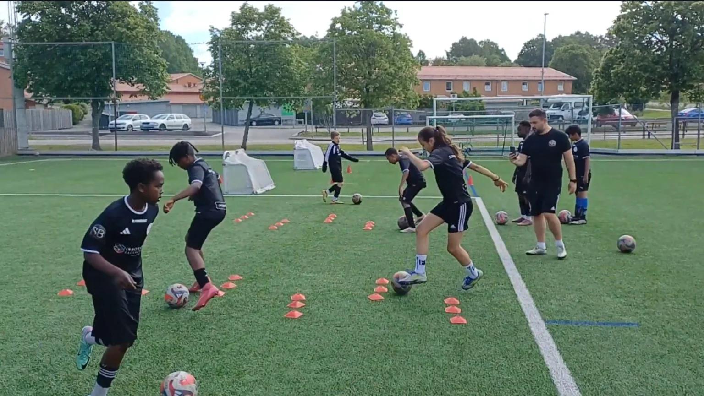
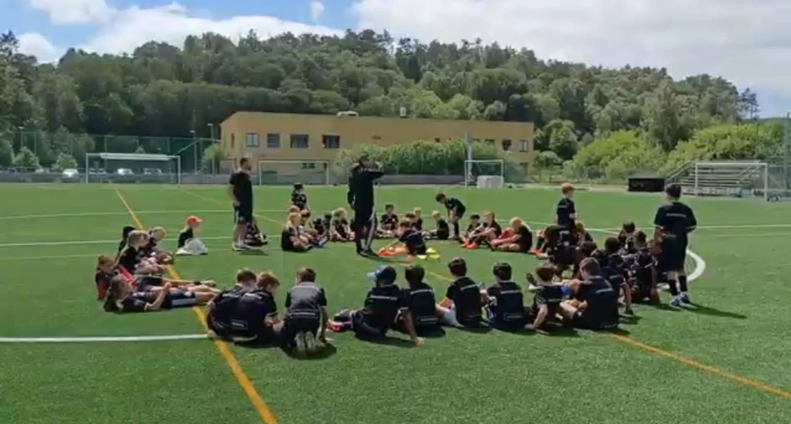
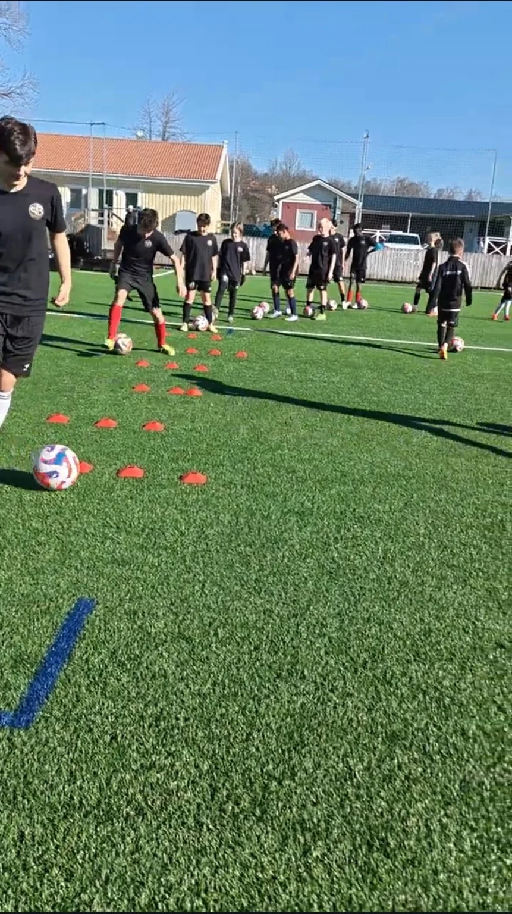
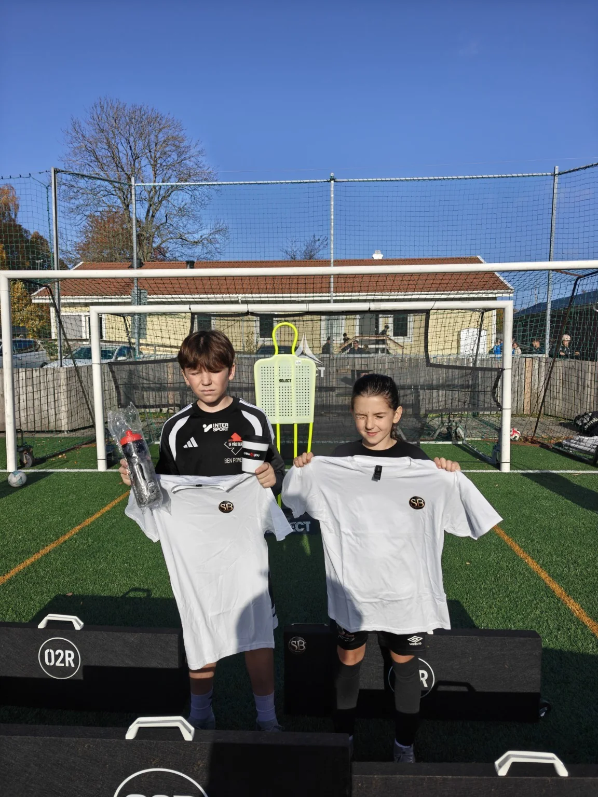

Kvalitet & feedback
Ett tydligt tema och personlig återkoppling genom hela passet.
 SB COACHING
SB COACHINGINDIVIDUELLT · GRUPP · LAG
Kvalitativ fotbollsträning från 8 år – individuellt, i grupper upp till 10 spelare eller med laget. Alltid med tydligt fokus och personlig feedback.
Vi erbjuder individuell träning, gruppträning i mindre och större grupper samt lagträning.
För spelare från 8 år. Varje pass har ett tydligt tema, många bollkontakter och personlig feedback utifrån spelarens nivå och mål.
Läs om träningen ↗Ett tydligt tema och personlig återkoppling genom hela passet.
Träna själv eller tillsammans med upp till 10 spelare.
Träningen anpassas efter ålder, nivå och mål.
Senad, Blertim eller båda leder träningen.
Vi tränar på det som händer i matchsituationer och på detaljerna som hjälper spelaren att lyckas oftare.
Se träningsupplägg ↗

På våra sportlovs-, påsk-, sommar- och höstcamper får spelarna träna och ha roligt tillsammans.





Vi är Senad och Blertim Zuta – bröder, fotbollstränare och grundare av SB Coaching.
Med UEFA B-utbildning och erfarenhet av spelar- och lagutveckling vill vi hjälpa unga spelare att utvecklas med tydliga instruktioner och personlig feedback.
Läs mer om oss ↗Berätta vad du söker så återkommer vi med information om träning, tider och platser.
Gör intresseanmälan ↗Har du frågor om träning, priser eller tillgänglighet?
sb.coacha@gmail.com